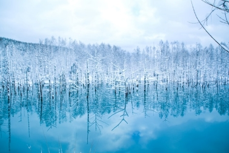
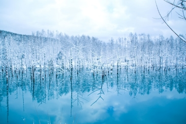

Hokkaido
Hokkaido is the furtest north region of japan. It is home to a single prefecture also called Hokkaido. As the region is the most northern,
it is often covered in thick layers of snow through most of the year. The snow provides a beautiful landscape for photography and amazing
spot for practicing snowsports and then relaxing in a nice hot spring. Hokkaidos railway system is lacking compare to the rest of the regions,
JR does connect all the major citys and towns but not the smaller ones. If you want to access the more rural areas a bus or a rental car
is recommended.
 Mountain Iou

Aoi Ike Pond
Mountain Iou

Aoi Ike Pond